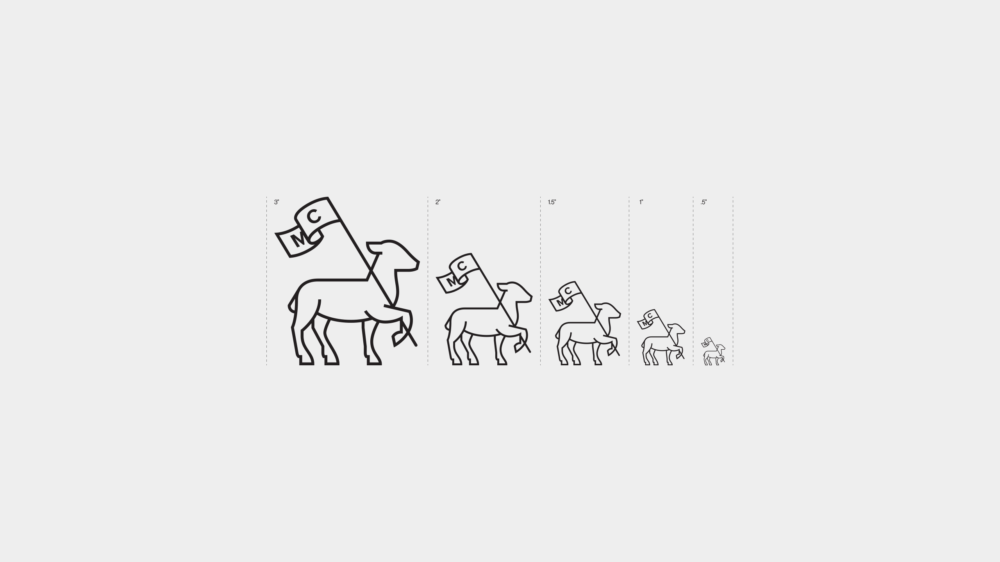
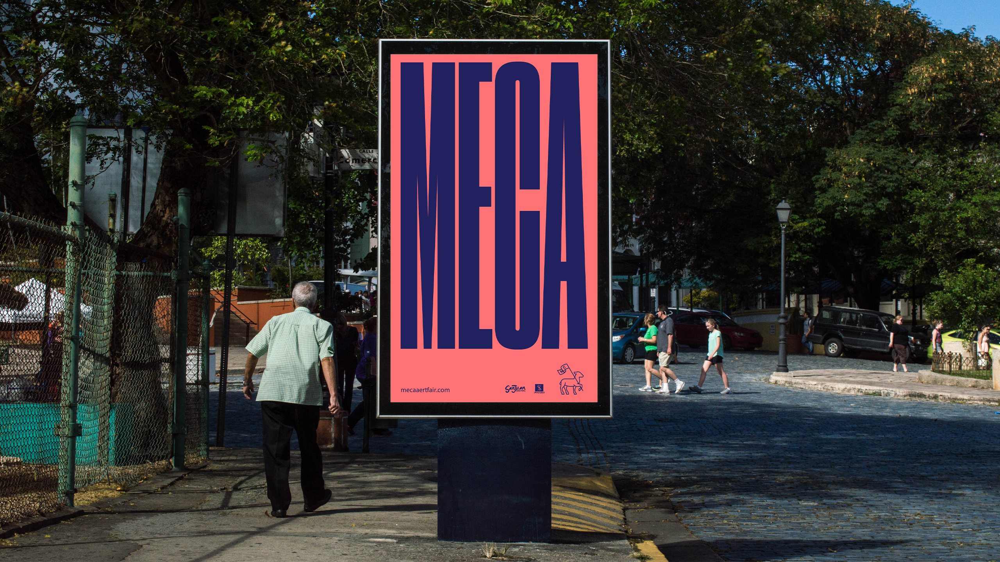
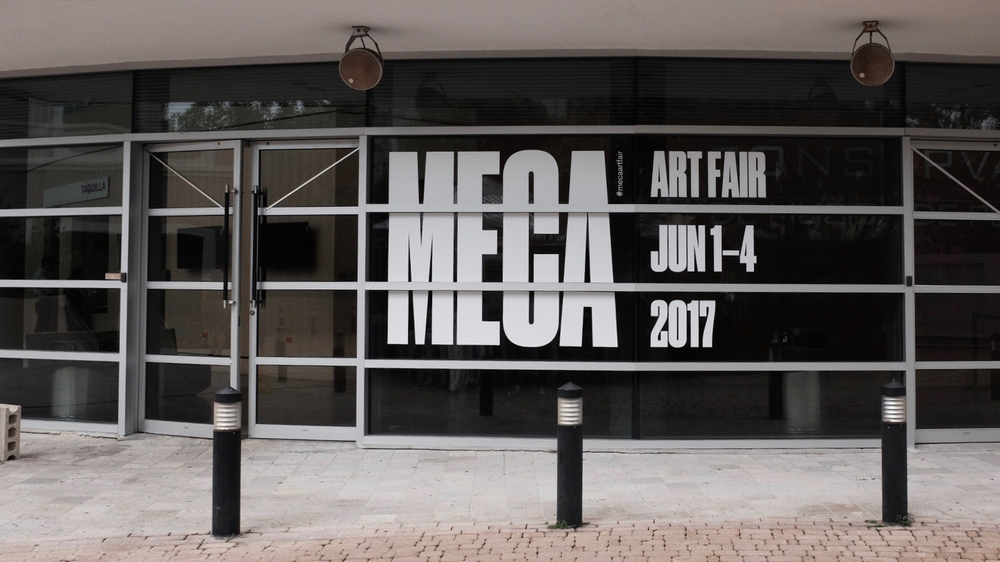
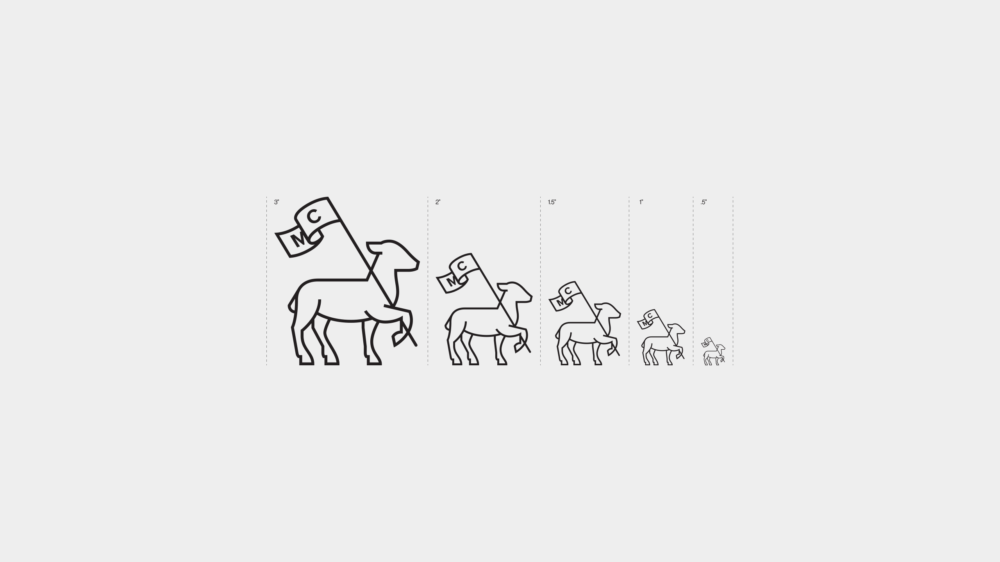
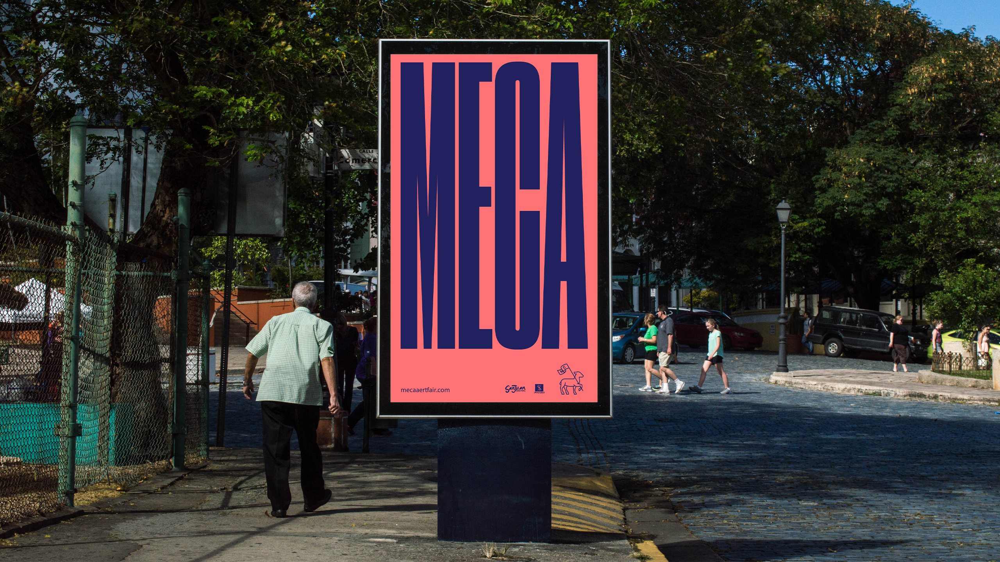
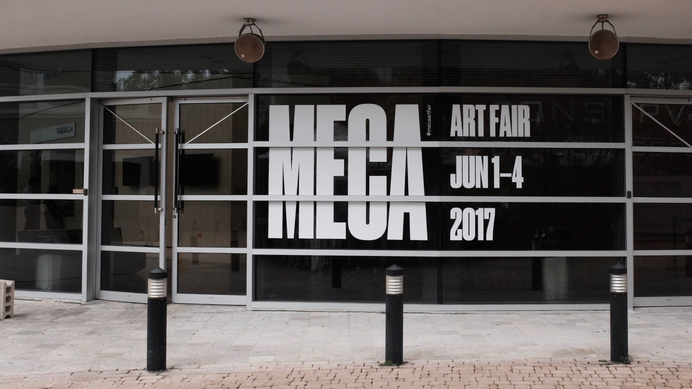

Meca Art Fair
MECA, short for Mercado Caribeno (Spanish for “Caribbean Market”), took place in Santurce, from June 1st - 4th of 2017 at the Conservatorio de Música de Puerto Rico. MECA was a meeting point and international platform for the Caribbean art market, made up of a brilliant assembly of young artists and galleries. The main objective was to stimulate art collection. Puerto Rico has a growing art market—with a prosperous artists’ community—that is making a solid statement in the international art circuit.
- Role ......................... Designer
- Creative Direction ........... Luis Diaz
- Team ......................... Luis Vazquez
- Studio ....................... DD-Diseño
 




